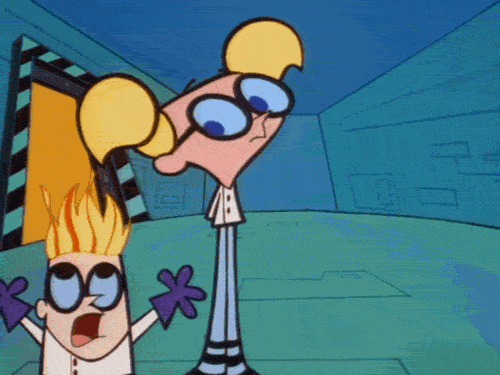
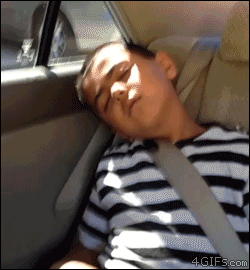
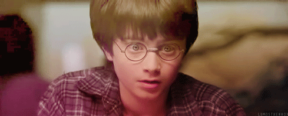
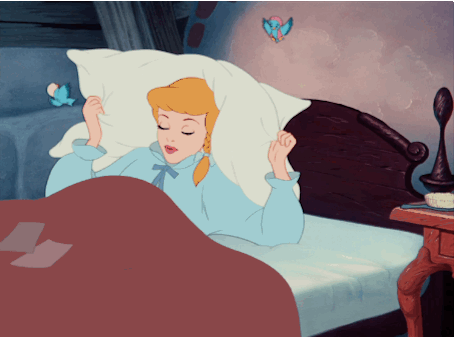
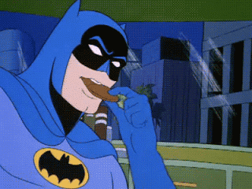
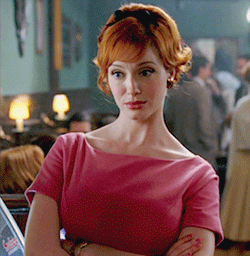

🎨 Complete Multi-Modal Caption Generation
Pipeline Components
- ResNet50: Emotion classification (6 groups)
- VideoMAE: Action recognition (Kinetics-400)
- YOLO: Object detection (80 COCO classes)
- VGG16: Scene understanding (indoor/outdoor, lighting, content type)
- Groq LLama 3.3: Multi-modal caption synthesis
Total Samples: 18
#1: 11DPmCCwl0SSis
True: positive_energetic | Predicted: positive_calm

😊 positive_calm (69%) 🏃 gargling (39%) 🎯 person 🎬 real, indoor, bright
"a serene person"
"A serene person is gargling in a bright indoor space."
#2: 11moFh8H3k9M7S
True: positive_energetic | Predicted: positive_calm

😊 positive_calm (71%) 🏃 shaking hands (10%) 🎯 person, tie, tie 🎬 real, indoor, bright
"a peaceful person"
"A serene person shaking hands indoors wearing a tie."
#3: 5vsp9FqLBVk4g
True: positive_energetic | Predicted: negative_intense

😊 negative_intense (100%) 🏃 sitting (35%) 🎯 person, person 🎬 animated, indoor, dim
"a angry person"
"Furious animated person sitting indoors with another person in dim lighting."
#4: GNGBfs76E3mGk
True: negative_intense | Predicted: negative_intense

😊 negative_intense (97%) 🏃 flying kite (8%) 🎯 scissors 🎬 animated, indoor, moderate
"a disgusted person"
"Furious animated character flying kite indoors with scissors nearby."
#5: 4yQNYx10VVOb6
True: negative_intense | Predicted: positive_calm

😊 positive_calm (48%) 🏃 slapping (24%) 🎯 person 🎬 real, indoor, moderate
"a relaxed person"
"A serene person slapping something indoors."
#6: J8Bb15275wt4A
True: negative_intense | Predicted: negative_intense

😊 negative_intense (56%) 🏃 yawning (45%) 🎯 person 🎬 real, indoor, moderate
"a fearful person"
"A furious person yawning indoors."
#7: oD0YFMXHpwxDq
True: surprise | Predicted: positive_energetic

😊 positive_energetic (54%) 🏃 reading book (57%) 🎯 none 🎬 animated, outdoor, moderate
"a joyful person"
"A happy animated character reading book outdoors in moderate lighting"
#8: 13yyvZdx0W6kTK
True: surprise | Predicted: surprise

😊 surprise (100%) 🏃 crying (49%) 🎯 person 🎬 animated, indoor, moderate
"a astonished person"
"A stunned animated person is crying indoors."
#9: VZ931BnGGAFoc
True: surprise | Predicted: surprise
😊 surprise (100%) 🏃 kissing (12%) 🎯 person, person 🎬 real, indoor, moderate
"a amazed person"
"A surprised person kissing another person indoors."
#10: ws4pzeC916KRO
True: negative_subdued | Predicted: negative_subdued

😊 negative_subdued (99%) 🏃 playing didgeridoo (8%) 🎯 person 🎬 real, indoor, moderate
"a dejected person"
"A sad person playing didgeridoo indoors."
#11: 14eQNo68VAXUfS
True: negative_subdued | Predicted: negative_subdued
😊 negative_subdued (99%) 🏃 crying (87%) 🎯 person, person, person 🎬 animated, indoor, dim
"a melancholic person"
"A sorrowful person is crying with two others indoors."
#12: 48c6Ky52T6HcI
True: negative_subdued | Predicted: negative_intense

😊 negative_intense (56%) 🏃 juggling balls (8%) 🎯 none 🎬 real, indoor, moderate
"a terrified person"
"Furious animated character juggling balls indoors."
#13: 3YsEPo1u3C8dW
True: positive_calm | Predicted: positive_calm

😊 positive_calm (92%) 🏃 brush painting (20%) 🎯 person 🎬 animated, indoor, moderate
"a peaceful person"
"A serene person engages in brush painting indoors."
#14: A9grgCQ0Dm012
True: positive_calm | Predicted: surprise

😊 surprise (70%) 🏃 dancing (3%) 🎯 person, person, fire hydrant 🎬 real, indoor, moderate
"a shocked person"
"A surprised person dancing near a fire hydrant indoors."
#15: 44L0gIN94vMEE
True: positive_calm | Predicted: positive_energetic

😊 positive_energetic (49%) 🏃 sticking tongue out (5%) 🎯 dog 🎬 animated, indoor, dim
"a happy person"
"A cheerful animated dog sticking tongue out indoors."
#16: L29fiOMSDhhvi
True: contempt | Predicted: negative_intense
😊 negative_intense (79%) 🏃 whistling (33%) 🎯 person, person, tie 🎬 real, indoor, dim
"a furious person"
"A furious person whistling near another person wearing a tie indoors."
#17: Plv18qor1IdHi
True: contempt | Predicted: contempt

😊 contempt (95%) 🏃 eating (14%) 🎯 person 🎬 real, indoor, dim
"a scornful person"
"A person eats with a contemptuous expression in a dim indoor setting."
#18: VxLkYEkjHviP6
True: contempt | Predicted: contempt

😊 contempt (99%) 🏃 playing poker (26%) 🎯 person, person, person 🎬 animated, indoor, moderate
"a contemptuous person"
"A scornful person playing poker indoors with others."